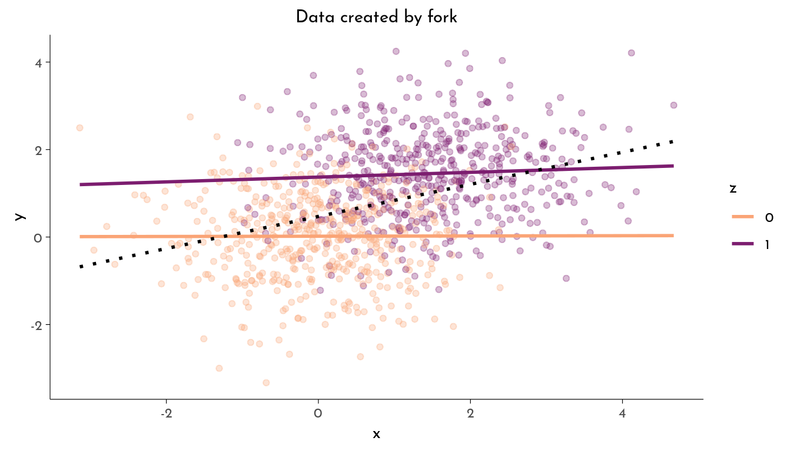

Causal inference
Taken from Richard McElreths lecture on Causal Inference.
Causal inference is “predicting the consequences of interventions” (wind/leafs) or “missing data imputation” (counterfactuals / Chinese landed on moon first).
Why to DAG? \(\rightarrow\) to sketch out causal assumptions and avoid causal salad.
Statistical models measure associations between variables. But depending on the causal dependencies, variables can interact both to expose OR to mask the influence of one variable onto another.
Below are the three elemental units of a DAG together with their statistical implications.
The Pipe
- Ignoring
z,xandyare correlated (\(x \not\!\perp\!\!\!\perp y\)) - Stratified by
z,xandyare not associated (\(x \perp\!\!\!\perp y | z\))
data <- tibble( x = rnorm(n = n),
z = rbinom(n = n, size = 1,
prob = inv_logit(x)),
y = rnorm(n, mean = 1.5*(z-.3)))plot_data(data, "Data created by pipe")
model_data(data)Linear Model ignoring z
-----------------------
lm(formula = y ~ x, data = data)
Estimate Std. Error t value Pr(>|t|) signif
(Intercept) 0.3361 0.0381 8.8179 <10^-4 ***
x 0.2984 0.0380 7.8474 <10^-4 ***
Linear Model stratified by z
----------------------------
lm(formula = y ~ x + z, data = data)
Estimate Std. Error t value Pr(>|t|) signif
(Intercept) -0.4129 0.0474 -8.7055 <10^-4 ***
x -0.0015 0.0346 -0.0435 0.9653
z 1.4707 0.0693 21.2071 <10^-4 ***The variable x does causally influence y (through z). But if we do include z as factor in our model, we can’t infer the effect of x on y. We might be tricked into thinking x does not causally influence y.
The Fork
- Ignoring
z,xandyare associated (\(x \not\!\perp\!\!\!\perp y\)) - Stratified by
z,xandyare not associated (\(x \perp\!\!\!\perp y | z\))
data <- tibble( z = rbinom(n = n, size = 1, prob = .5),
x = rnorm(n = n, mean = 1.5 * z),
y = rnorm(n = n, mean = 1.5 * z))plot_data(data, "Data created by fork")
model_data(data)Linear Model ignoring z
-----------------------
lm(formula = y ~ x, data = data)
Estimate Std. Error t value Pr(>|t|) signif
(Intercept) 0.4707 0.0426 11.0446 <10^-4 ***
x 0.3670 0.0296 12.3864 <10^-4 ***
Linear Model stratified by z
----------------------------
lm(formula = y ~ x + z, data = data)
Estimate Std. Error t value Pr(>|t|) signif
(Intercept) 0.0190 0.0457 0.4151 0.6782
x 0.0304 0.0325 0.9350 0.3500
z 1.3866 0.0805 17.2199 <10^-4 ***The variable x does not causally influence y, their association is spurious. But if we do not include z as factor in our model, we actually find an association between x and y that might erroneously be interpreted as causal.
“In data, the fork and the pipe are indistinguishable, but causally they are different!”
\(\rightarrow\) The fork and the pipe look and behave the same in the data set, we therefore need to know their causal relationship to decide whether to include z in the model (or at least to know how to interpret the uncovered associations).
The Collider
- Ignoring
z,xandyare not associated (\(x \perp\!\!\!\perp y\)) - Stratified by
z,xandyare associated (\(x \not\!\perp\!\!\!\perp y | z\))
“A restaurant in a good location can make money EVEN IF it has bad food.” and “With really great food, you can survive even if you are at a bad location.”
\(\rightarrow\) In the population of surviving restaurants, there is a negative correlation between how good the location is and how good the food is. But this is not because the location causes bad food and it is not because having a good chef cause a bad location. (“selection bias”, other example: “trustworthy publications vs. impact factor” when selection happens based both on “trustworthiness” AND “excitingness” of articles)
data <- tibble(x = rnorm(n = n) * 1.3,
y = rnorm(n = n) * 1.3,
z = rbern(n, inv_logit(x + y)))plot_data(data, "Data created by collider")model_data(data)Linear Model ignoring z
-----------------------
lm(formula = y ~ x, data = data)
Estimate Std. Error t value Pr(>|t|) signif
(Intercept) -0.0090 0.0402 -0.2247 0.8222
x -0.0132 0.0298 -0.4422 0.6585
Linear Model stratified by z
----------------------------
lm(formula = y ~ x + z, data = data)
Estimate Std. Error t value Pr(>|t|) signif
(Intercept) -0.6629 0.0538 -12.3261 <10^-4 ***
x -0.2212 0.0294 -7.5237 <10^-4 ***
z 1.2918 0.0794 16.2720 <10^-4 ***The variable x does not causally influence y, but both act together to influence z. But if we do include z as factor in our model, we actually find an association between x and y that might erroneously be interpreted as causal.
Another tricky aspect of colliders is that they behave differently in terms of information flow within the DAG. Conditioning on a collider opens this node, which can create new paths of information flow from x to y. This can cause trouble for trying to block all backdoor paths between x and y (paths of associations between x and y that are not causal).
\(\rightarrow\) s. also: McElreath (2020), chapter 5 (The Many Variables & The Spurious Waffles) and chapter 6 (The Haunted DAG & The Causal Terror).
Bad Controls
Examples of cases where the variable z constitutes a bad control - that is, it should not be included when inferring the effect of x on y. Examples are based on Cinelli, Forney, and Pearl (2022).
- M-Bias: if you condition the collider
z, this opens a non-causal path within the DAG that contaminates the estimate of the effect ofxony(backdoor criterion). - Post-Rreatment Bias: when there is a confound
ubetweenzandy, conditioning onzmight invert the inferred effect (even worse than just estimating the mediator effect of a pipe without an additional confoundu) (backdoor criterion). - (Sneaky) Selection Bias: conditioning on the collider induces selection, thereby contaminating the causal estimate (backdoor criterion).
- Case-Control Bias: controlling on a descendent of
y, this distorts the estimation of the (causal) association betweenxandy. - Precision Parasite: conditioning on
zeffectively removes variation inxin the model, leading to a less precise estimate of the effect ofxony(does not bias estimates, but makes them less precise) - Bias Amplification: adding
zexaggerates bias introduced byu(again by removing variation inx)